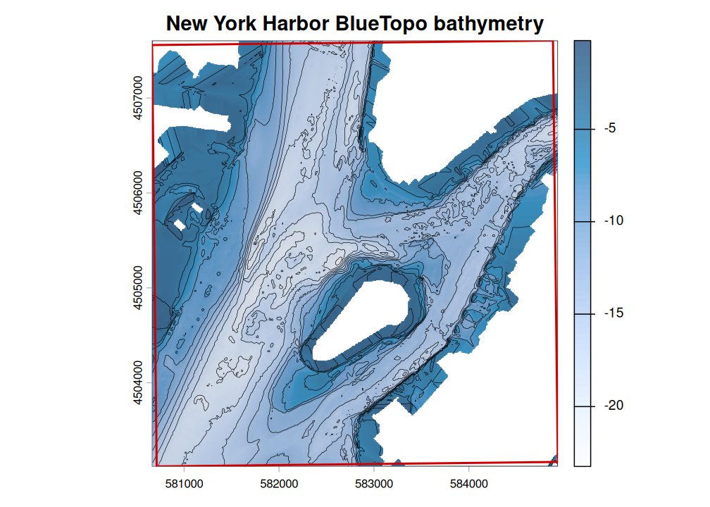

bluertopo discovers, downloads, verifies, and opens National Oceanic and Atmospheric Administration (NOAA) BlueTopo bathymetry for an area of interest using terra. The package keeps source GeoTIFF and RAT sidecar files intact by default, records query and catalog provenance, and makes native source-resolution choices explicit.
BlueTopo is not for navigation. This package performs no vertical-datum conversion and is not affiliated with, endorsed by, or supported by NOAA.
Reference: NOAA, BlueTopo and BlueTopo specifications.
New York Harbor example
This example demonstrates tile discovery, verified asset retrieval, and bathymetry extraction for New York Harbor. The area includes portions of Lower Manhattan, Governors Island, Upper New York Bay, and the East River entrance.

BlueTopo bathymetry for New York Harbor, displayed with hillshade, contours, and the example-area boundary.
| Example area | Selected tiles | Native resolution | Retrieved assets | Verification |
|---|---|---|---|---|
| New York Harbor | 2 | 4 m | 2 GeoTIFFs and 2 RAT files | SHA-256 verified |
Basic workflow
sf::sf and sf::sfc polygon objects with a known CRS can also be passed directly to bluertopo(), bluertopo_tiles(), and bluertopo_download().
| Function | Returns |
|---|---|
bluertopo_tiles(aoi) |
Selected tile footprints and metadata as a terra::SpatVector
|
bluertopo_download(aoi, path) |
Verified source-asset records as a data frame |
bluertopo(aoi) |
A terra::SpatRaster or terra::SpatRasterCollection
|
Provenance workflow
result <- bluertopo(aoi, details = TRUE)
result$tiles
result$downloads
result$coverage
result$provenanceExamples
The Examples tab uses NOAA BlueTopo source tiles for New York Harbor. Normal package tests use small synthetic fixtures so checks remain network-free. The mixed-grid example uses a documented secondary AOI near Key West and Boca Chica Channel because the current New York Harbor plan is one compatible 4 m native grid.